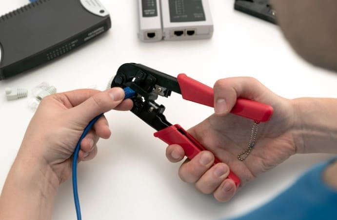

Portfolio

Crimping
Proyek pertama saya adalah crimping. Crimping adalah proses dimana sebuah kabel jaringan di proses agar mampu menjadi sebuah kabel jaringan yang utuh atau sempurna.

Membuat Web Portfolio
Ini proyek kedua saya yaitu codingan. Coding itu merupakan sebuah kegiatan menulis satu kode dengan menggunakan bahasa komputer untuk bisa berkomunikasi dengan komputer.